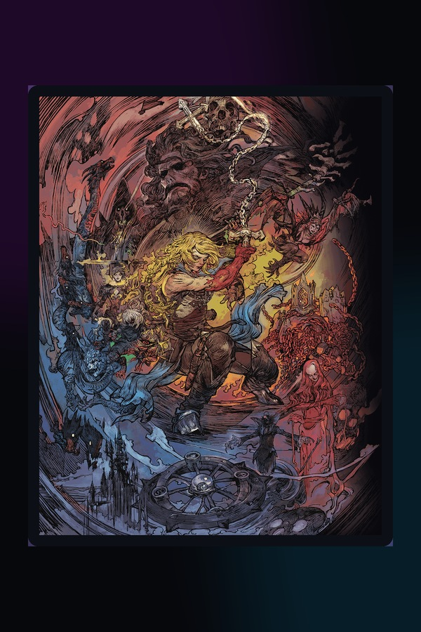

Home › Cup of Game › Castlevania: Belmont's Curse
Cup of Game · AACastlevania: Belmont's Curse, il ritorno di Konami

Artwork © Konami Digital Entertainment
· Redazione BENDREX
Castlevania: Belmont's Curse è il ritorno di Konami al platform 2D, con l'italiano incluso. Konami lo ha affidato a Evil Empire, lo studio delle espansioni di Dead Cells. È uscito il 15 ottobre 2026 su PC via Steam, PS5, Switch e Xbox Series.
Com'è
Si avanza per stanze, si impara il ritmo dei nemici, si riprova. Nessuna mappa libera: la frusta e i piedi.
Non c'è una recensione nostra e non diamo un punteggio. A chi può piacere: chi ama i platform 2D brevi, da sessione corta e ripartenza immediata.
Requisiti PC e prezzo
- Minimi: Windows11, Intel Core i5 8400, 16 GB di RAM, nVidia GeForce GTX1650, DirectX 11, 10 GB di spazio.
- Consigliati: Windows11, Intel Core i5 10400, 16 GB di RAM, nVidia GeForce RTX 3060, DirectX 11, 10 GB di spazio.
Entrambi richiedono processore e sistema operativo a 64 bit.
Su Steam costa 29,99 €, prezzo rilevato il 17 novembre 2026; i listini console non li abbiamo verificati. Il link qui sotto porta alla pagina Steam ufficiale, senza affiliazione.
Castlevania: Belmont's Curse su Steam →
In una riga: quattro piattaforme al lancio, italiano incluso e un prezzo pieno da valutare con calma.